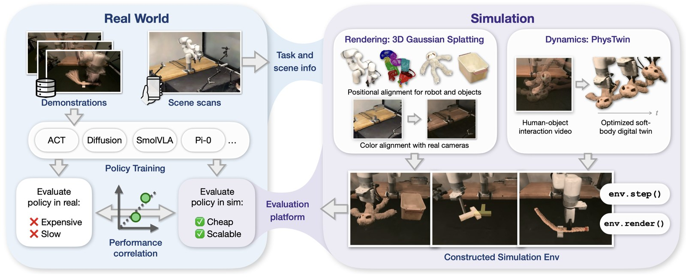
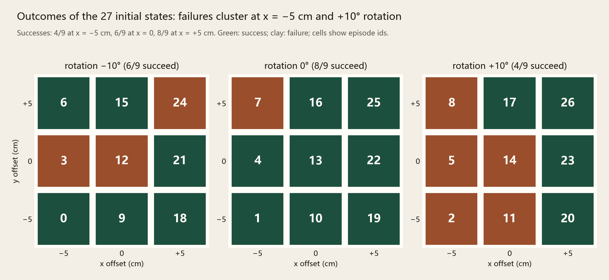
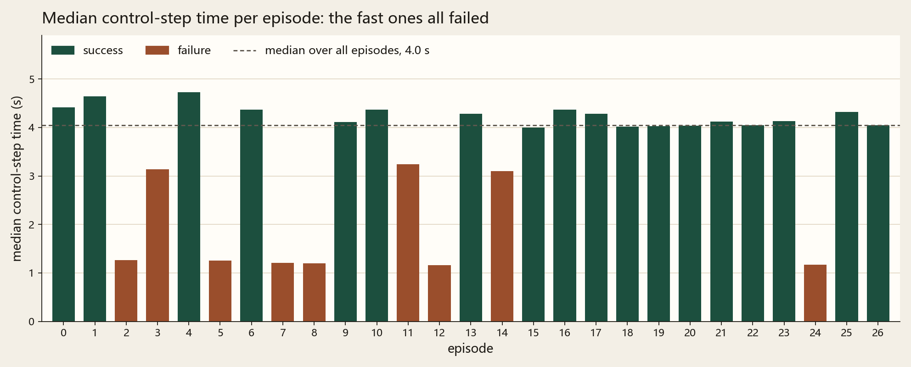

Real2Sim-Eval · 2026.11.26
To Grade a Robot in Simulation, the Rope Must Be Soft and the Colors Must Match That Camera: Real2Sim-Eval on a W7900




The most honest way to grade a robot policy is to let it do the task on the real robot, over and over. But real-robot evaluation is slow and hard to repeat. Every episode needs someone to put the rope back where it was, and how well they do it is down to feel. The same checkpoint succeeds today and fails tomorrow, and you cannot tell whether the policy is unstable or the rope just took a different bend. Training keeps getting faster; evaluation has become the slowest link.
Simulation could take over the job, yet few people dare to evaluate with it, because a policy that does well in simulation does not necessarily do well on the real robot. Kaifeng Zhang, Shuo Sha, Hanxiao Jiang, Matthew Loper, Hyunjong Song, Guangyan Cai, Zhuo Xu, Xiaochen Hu, Changxi Zheng and Yunzhu Li, from Columbia, SceniX and Google DeepMind, set out to answer one question: what kind of simulator ranks policies the same way the real robot does? The paper is at ICRA 2026, and the code, data and checkpoints are public.
Evaluation needs the ranking
What this paper wants is not a good-looking simulator but a statistical promise. Run the same set of policies and checkpoints from the same initial states in simulation and on the real robot, get two sets of success rates, and look at their Pearson correlation, plus MMRV (how badly the ranking gets shuffled), borrowed from SIMPLER. The policies are trained only on real demonstrations, with not one simulated trajectory mixed in. The simulator has to answer exactly one thing: which checkpoint is better.
The authors see two gaps between simulation and reality: appearance and dynamics. The policy looks at camera images, so if the images look wrong, its judgment drifts; if objects move wrong, the same action has different consequences. The three tasks are picked for hard dynamics: packing a plush toy into a box, threading a rope through the two openings of a clip, and pushing a T-shaped block to a target. The first two are soft bodies, which a traditional simulator cannot match by tuning a few global parameters.
Appearance: one iPhone and a quadratic polynomial
Appearance comes from 3D Gaussian Splatting (3DGS). One sweep around the workbench with Scaniverse on an iPhone gives Gaussian models of the robot, the table and the background; each object is scanned once more on its own, and then they are cut apart in SuperSplat. A task needs this scan only once.
The scanned Gaussians still have to be aligned to the robot's frame. Objects are aligned to PhysTwin's particles. For the robot, 2,000 surface points are sampled from each URDF link and the transform is solved with ICP plus RANSAC; the background was scanned together with the robot, so it reuses the same transform. Each Gaussian kernel then inherits a link ID from its nearest neighbor, so when the arm moves the kernel moves with its link, and the gripper can open and close.
Next comes a detail that is easy to miss: color. The Gaussians inherit the iPhone's colors, while the policy was trained on RealSense images, and the RealSense has its own color cast. Green-screen compositing (SIMPLER's approach) can get away with it on a third-person camera, but it falls apart on a wrist-mounted one. At fixed camera poses, the authors pair Gaussian renders with images from the real camera and fit a quadratic polynomial in RGB space, using iteratively reweighted least squares to hold down outlier pixels. The appendix is specific: five 848×480 images, Tukey biweights, 50 iterations. In the ablation, removing this step drops the rope task's correlation from 0.901 to 0.714. What the simulation has to resemble is not the real world, but the real world as that camera sees it.
Dynamics: one rope, two thousand particles
Soft-body dynamics is handled by PhysTwin. It represents an object as particles and springs: particles within a distance threshold are joined by a spring, and every spring has its own stiffness. These parameters are optimized from a video of a human hand handling the object: the hand's keypoints are tracked and attached to the spring system as control points, and the parameters are tuned until the simulated object moves like the one in the video. The rope in this run has 2,002 particles and 17,048 springs.
Grasping is written with care. Many simulators, for stability, weld the object's points to the gripper; here contact is friction only. The gripper stops closing when its collision force passes a threshold, and whether the grasp holds is up to friction. The Gaussians follow the particles: rigid bodies are updated with rigid transforms, soft bodies with linear blend skinning (LBS). The physics runs on NVIDIA Warp, and the authors report 5 to 30 FPS on one GPU, depending on whether there is contact.
With per-spring stiffness replaced by a single global stiffness, the rope task's correlation drops from 0.901 to 0.832. An IsaacLab baseline that approximates the rope as a chain of articulated links reaches only 0.237.
The exam rules
The evaluation protocol follows the recommendations of Kress-Gazit et al.: each task has a fixed set of initial states, and simulation and the real robot use the same set. On the real side, a live overlay tool draws the simulated initial state over the camera image, and the operator places the objects to match it. The rope task's initial states form a 3×3×3 grid: x and y offsets of −5 to 5 cm and rotations of −10 to 10 degrees, 27 in all, 30 seconds each.
Real-robot outcomes are judged by a person; in simulation they are judged automatically from privileged state. The rope counts as a success when more than 100 spring segments pass through each of the clip's two openings and this holds for more than 30 of the last 100 frames (3.3 seconds). Across the three tasks, the full method's correlations are 0.944 (packing), 0.901 (rope) and 0.915 (T push).
The paper is fairly candid about its limits. Per-checkpoint success rates only appear in figures, not in a table. In a replay experiment that feeds the same real-robot actions into the simulation unchanged, 52 of the 405 rope trajectories still end differently from the real robot. The authors also point out that on the rope task, ACT's absolute success rates do not line up between simulation and the real robot; only the trend agrees. What the paper shows is that the ranking can be trusted, not that every trajectory is right.
On the W7900, Warp is the first wall
This run used one AMD Radeon Pro W7900D (gfx1100, 48 GB), with a ROCm 7.14 and PyTorch 2.11 image, and only that card's render node mounted in the container. It ran the example from the README: the rope task, ACT checkpoint 007000, the last checkpoint of 7,000 training steps; 27 initial states, 30 seconds each, scored at the end with the repository's own calculate_success_rope.py.
The first wall was Warp. Warp 1.7 compiles its kernels on the spot with NVRTC and has no gfx1100 target. I rewrote the spring-mass solver in PyTorch, keeping the entry points that phystwin.py calls. Spring forces accumulate with index_add_. Self-collision neighbors come from cdist plus top-k instead of a hash grid. Collision with the gripper and clip meshes took the most care: first find the closest point on a triangle within 2 cm (Ericson's closest-point algorithm), then decide inside or outside with the generalized winding number, at the original threshold of 0.6. Warp approximates the winding number with a BVH; these meshes have only a few thousand triangles, so I sum it exactly.
The Gaussian rasterizer is a standard CUDA extension, and its changes were, if anything, mechanical: CUB becomes hipCUB, GLM_FORCE_CUDA becomes GLM_FORCE_HIP, cooperative_groups.h points to HIP's implementation of the same name, __trap() becomes __builtin_trap(). The funniest one: hipcc does not accept the extra space in the kernel launch syntax, so << < has to be written <<<.
Sapien was a different kind of trouble. The project only uses it to parse the URDF and do forward and inverse kinematics; the images all come from the Gaussians. But Sapien 3 opens Vulkan as soon as it creates a scene, and the container has a render node but no Vulkan driver, so the process aborts. The patch makes scenes with only PhysX's CPU system and drops visual meshes when loading the URDF. Along the way it brings back Sapien 2's Pose.from_transformation_matrix and works around the error transforms3d 0.4.2 raises on NumPy 2 because of copy=False. gradio is only used for visualization, so it is now imported when needed. Finally, at process exit the destructors of Sapien and Open3D report free(): invalid pointer, long after the videos have been written, so the evaluation script ends with os._exit(0) rather than let a destructor error turn a normal finish into a crash.
Episode 10, stuck at step 291
Episodes are numbered from 0, and 0 through 9 ran without trouble. Episode 10 reached step 291 and the log never moved again. The process was alive, one CPU core was pegged, GPU utilization was 0, and it stayed that way for 25 hours.
In gdb, the main thread was stuck in the most ordinary of operations: a boolean index like tensor[mask]. PyTorch first has to nonzero to count the elements, then copy that count from device memory back to the host; under hipMemcpyWithStream sits HSA's BusyWaitSignal::WaitRelaxed, spinning on a completion signal. The signal never came, and the wait has no timeout. I did not track down why the signal never came, and did only two things: gave the evaluation script a starting-episode parameter so it could carry on from episode 10, and wrapped it in a watchdog that kills the run and retries once if the log has not advanced for 180 seconds, and otherwise skips the episode. The watchdog fired three more times later, and each time the episode it was waiting on already had a complete recording, so the retry was never used.
The watchdog script had one oversight: it told the evaluation where to start but not where to stop. So every process ran all the way to episode 26, and the next process started over from the following episode. Rerunning 17 episodes took five days.
Where the time goes
Looking back at the logs after all 27 episodes: one control step took from under 1 second to 10 seconds, with most episodes at a median of about 4 seconds, so 30 seconds of simulation takes close to an hour. The paper reports 5 to 30 FPS on one GPU; this is about 0.25 FPS, one to two orders of magnitude slower.
A few episodes were clearly fast: episodes 2, 5, 7, 8, 12 and 24 ran at a median of about 1.2 seconds per step, and every one of them failed; 3, 11 and 14 ran at about 3.2 seconds and also failed; none of the 18 successful episodes ran faster than 4 seconds per step. The most likely explanation is contact: when the gripper and the clip do not touch the rope, the mesh-collision queries rarely have any real work to do. The paper itself says speed depends on the contact state.
The main reason for the slowness is my solver, not the GPU. The rope takes 667 substeps per control step. Upstream's Warp version records these 667 substeps into one CUDA graph and replays it once per step. My PyTorch solver does not record a graph; it launches kernels from Python one substep at a time, with several synchronizations that copy boolean results back to the host in between, and with those synchronizations there, it could not be captured into a graph even if I tried. The next step is to remove those synchronizations, merge the substeps into fewer kernels, and then capture them with HIP Graph.
18/27, and a number with nothing to compare against
With all 27 episodes run and scored by upstream's rule: 18 succeed, a success rate of 66.7%. The verdicts are clean: in every successful episode, each of the last 100 frames has both openings threaded; in every failed episode, not one frame does. Nothing sits near the 30-frame threshold.
The failures are not spread evenly over the grid either. Of the 9 states at an x offset of −5 cm, only 4 succeed; at 0, 6; at +5 cm, 8. Of the 9 states at +10° rotation, only 4 succeed; at 0°, 8. Twenty-seven points cannot say much, but which side of the grid this checkpoint prefers is plain to see.
Those five wasted days bought an unexpected data set: episodes 16 through 26 were each scored 2 to 11 times, 68 times in all, and not one outcome changed. That is not because the simulation is bit-for-bit reproducible. Run the same episode twice and the rope's points in the last frame differ by up to 2 cm. The most likely source is index_add_ in the spring forces: on the GPU the order of accumulation differs every run, so the last bits of the floating-point result differ, and a few hundred steps later that is centimeters. A few centimeters either way, whether the rope gets through is still decided by the initial state. Only two episodes showed signs of wavering. In two earlier unscored runs, episode 12 took about 4 seconds per step, inside the band of the successful episodes, while the scored run took 1.16 seconds; episode 14 took 4.03 seconds once and 3.1 to 3.3 seconds the other four times. The recordings of those runs were overwritten before they could be scored, so how they ended cannot be checked. Both sit at the center of the grid, differing only by a ±10° rotation, right where success meets failure.
Back to 18/27: it cannot be compared with the paper directly. The paper's main result is the correlation between simulated and real success rates over a set of checkpoints. The simulated success rate of this one checkpoint, ACT 007000, only appears in a figure, with no number in the text, and the repository does not include the real-robot labels. Reproducing 0.901 would take a set of checkpoints and real-robot results. So what this run verifies is that Gaussian rendering, the spring-mass rope and the ACT policy closed the loop on one Radeon card under the official protocol and were scored by the official rule; the correlation itself has not been verified.
The code is at https://github.com/charyang-ai/real2sim-eval.